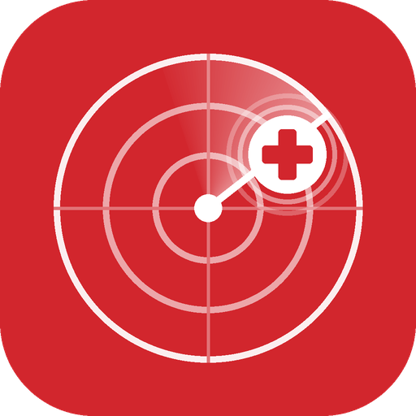

응급레이더
버튼 몇 번으로, 지금 받아 줄 응급실을 찾는
구급대원용 웹 앱
오랫동안 쓰지 않았다면 처음 열 때 30초~1분 걸릴 수 있습니다.
📱 아이폰 · 아이패드 (사파리)
- 아래쪽 공유 버튼(□↑)을 누릅니다. 최신 iOS는 ⋯ → 공유
- 홈 화면에 추가를 누릅니다
- 이름 그대로 추가
🤖 안드로이드 (크롬 · 삼성 인터넷)
- 위의 이 기기에 설치하기 버튼, 또는 ⋮ → 홈 화면에 추가
- 삼성 인터넷은 ≡ → 현재 페이지 추가 → 홈 화면
💻 윈도우 · 맥 (크롬 · 엣지)
- 주소창 오른쪽 설치 아이콘, 또는 위의 이 기기에 설치하기
- 맥 사파리: 화면 맨 위 메뉴 막대 파일 → Dock에 추가